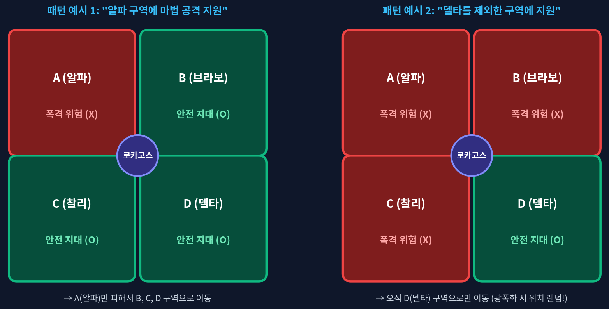
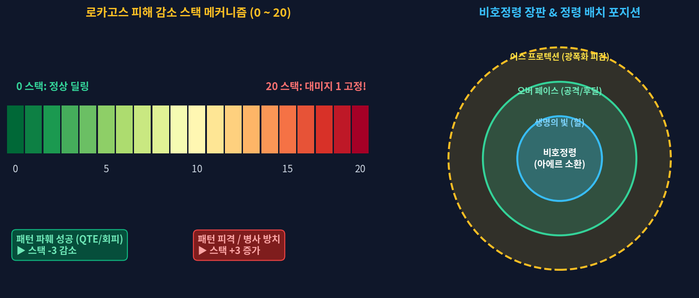

카테고리 탭을 선택해 스펙/버프 시뮬레이션, 보스 패턴, 숙제별 최소 컷·보상 활용법을 확인하세요
| 아이템 명칭 | 주요 효과 | 공식 획득처 | 특이사항 |
|---|---|---|---|
| 눈사람 포션 (축제 음료) | 마방+20 / 명중+15 / 대미지+20% | 엘티보 눈사람족 수장 / 거래소 | 중복불가(따뜻한 에오스의 파편) |
| 改-각성의 비약 | 명중+20 / 대미지+10% | 조제, 거래소, 이벤트 | - |
| 改-신뢰의 물약 | 마방+35 / 명중+30 | 조제, 거래소, 이벤트 | - |
| 이자벨의 비법 (고정) | 마방+30 / 명중+25 | 키트, 거래소 | - |
| 이자벨의 비법 (비율 / 퇴마사의 은총) | 마방+40 / 명중+30 | 키트, 거래소 / 컨텐츠 | - |
| 이자벨의 비법 (대미지 / 전투) | 대미지+10% | 키트, 거래소 | - |
| 정제된 속성 앰플 | 속성+10 | 각 마을 마법상점 | - |
| 신속 포션 | 유틸/회복 | 이벤트 | - |
| 이자벨의 특선 묘약 (고정) | 마방+35 / 명중+30 | 키트, 거래소 | - |
| 이자벨의 특선 묘약 (비율) | 마방+50 / 명중+35 | 키트, 거래소 | - |
| 이자벨의 특선 묘약 (대미지) | 대미지+15% | 키트, 거래소 | - |
| 이자벨의 비법 (명중) | 명중+30 | 키트, 거래소 | - |
| 이자벨의 특선 묘약 (명중) | 명중+50 | 키트, 거래소 | - |
| 이자벨의 비법 (크리티컬) | 명중+10 / 대미지+5% | 키트, 거래소 | - |
| 사미선령지채 (요리) | 마방+20 / 명중+20 | 요리 스킬, 거래소 | - |
| 괴력의 햄 | 마방+15 / 대미지+5% | 이벤트, 룬정원 채집, 거래소 | - |
| 보호의 비약 | 마방+30 / 피감+10% | 이벤트 | - |
| 집중의 비약 | 명중+25 | 이벤트 | - |
| 의지의 비약 | 마방+15 / 피감+5% | 이벤트 | - |
| 클럽 상점 버프 Type P | 마방+15 / 명중+15 / 대미지+10% | 나르비크 클럽상점 알렌 | - |
| 탐험 공격 피해량 증가 | 대미지+5% | 소울링크 탐험 포인트 | - |
| 탐험 피해 감소 증가 | 마방+20 / 피감+5% | 소울링크 탐험 포인트 | - |
| 생명의 빛 (아에르 힐 장판) | 마방+40 | 비호정령 스킬 | - |
| 오버 페이스 (아에르 공격 장판) | 명중+40 / 대미지+10% | 비호정령 스킬 | - |
| 어스 프로텍션 (로키 피감 장판) | 마방+60 / 피감+30% | 비호정령 스킬 | - |
| 탐험 사거리 증가 | 유틸/회복 | 소울링크 탐험 포인트 | - |
| 탐험 경직 무시 | 유틸/회복 | 소울링크 탐험 포인트 | - |
| ☆★ 이자벨의 특선 묘약 (HP 회복) | 유틸/회복 | 키트, 거래소 | - |
| ☆★ 이자벨의 특선 묘약 (HP/MP/SP) | 유틸/회복 | 키트, 거래소 | - |
| 이자벨의 선약 (HP 즉시 회복) | 유틸/회복 | 키트, 거래소 | - |
| ☆★ 스페셜 출석체크 물약 | 유틸/회복 | 출석 이벤트 | - |
| 改/眞/신-라이프 포션(대) | 유틸/회복 | 조제, 거래소 | - |
| 클럽 상점 버프 Type E-2 | 경험+100% | 나르비크 클럽상점 알렌 | 중복불가(스승의 증표 / 따뜻한 에오스) |
| 스승의 증표 | 경험+100% | 나르비크 사제 관리 사무실 | 중복불가(클럽 상점 버프 Type E-2) / 접속종료시차감 |
| 따뜻한 에오스의 파편 | 경험+100% | 이벤트 | 중복불가(클럽 E-2 / 눈사람 포션) |
| 경험의 심장 | 경험+100% | 컨텐츠, 거래소 | 중복불가(경험의 군고구마) / 접속종료시차감 |
| 경험의 군고구마 (숙성) | 경험+100% | 이벤트 | 중복불가(경험의 심장) / 접속종료시차감 |
| 도전 과제 완료 도장 (경험치) | 경험+50% | 도전 과제 | 중복불가(참 잘했어요) / 접속종료시차감 |
| 참 잘했어요 (경험치) | 경험+50% | 도전 과제 | 중복불가(도전 과제 완료 도장) / 접속종료시차감 |
| 이자벨의 비법/특선/선약 (경험) | 경험+50% | 키트, 거래소 | - |
| 캐시 3종 (전설고구마/최상급에오스/얼리버드) | 경험+150% | 아이템 샵, 거래소 | - |
| 네냐플 고양이1 버프 | 경험+30% | 네냐플 고양이1 | - |
| 룬 던전 TP 룬 경험치 부스터 | 경험+100% | 룬 경험의 던전 좌측 하단 아이콘 | - |
| 투구 랜덤 옵션 (룬 경험치 +500) | 경험+50% | 사냥터, 키트, 거래소 | - |
| 로토의 부적 | 레어+100% | 엘티보 눈사람족 수장 | - |
| 레어의 심장 | 레어+100% | 컨텐츠, 거래소 | 중복불가(레어의 밤고구마) / 접속종료시차감 |
| 레어의 밤 고구마 (숙성) | 레어+100% | 이벤트 | 중복불가(레어의 심장) / 접속종료시차감 |
| 행운의 네잎클로버 | 레어+50% | 엘티보 눈사람족 수장 | - |
| 클럽 상점 버프 Type R-2 | 레어+50% | 나르비크 클럽상점 알렌 | - |
| 도전 과제 완료 도장 (레어) | 레어+50% | 도전 과제 | 중복불가(참 잘했어요) / 접속종료시차감 |
| 참 잘했어요 (레어) | 레어+50% | 도전 과제 | 중복불가(도전 과제 완료 도장) / 접속종료시차감 |
| 탐험 레어 버프 | 레어+30% | 소울링크 탐험 포인트 | - |
| 네냐플 고양이X 버프 | 레어+30% | 네냐플 고양이X | - |
| 펫 보물찾기 & 몬스터 카드(+4) | 레어+40% | 엘티보 / 몬스터카드 | - |
※ 버프를 하나라도 체크하거나 상단 실전 풀버프 입력을 선택하면 아래 표의 기준치도 실전 도핑 기준치로 자동 전환됩니다.
| 항목 / 콘텐츠 | 신조(일반) | 어비스(일/어) | 어비스 헬 | 오방 헬 | 로카고스 | 이클 중상위 | 오방 어비스 |
|---|
※ 동일 던전·콘텐츠라도 난이도(일반/어려움/헬) 및 5차 각성 전후에 따라 요구되는 명중·마방·도핑·장판 운용이 달라집니다.
| 구분 | 일반 (Normal) · 입문 | 어려움 (Hard) · 중급 | 헬 (Hell) · 5각 심화 |
|---|---|---|---|
| 권장 장비 · 에타 | 인퍼널~아퀼루스 셋 / 에타 1~14 | 아퀼루스 풀셋~어비스 부위 / 에타 15+ | 어비스 4~5셋 이상 / 에타 21+ · 5차 각성 |
| 마을 스펙 가이드 | 마방 1,200~1,300 / 명중 1,100~1,200 | 마방 1,350~1,550 / 명중 1,250~1,450 | 마방 1,550~1,850+ / 명중 1,450~2,250(막보) |
| 도핑 · 장판 핵심 | 자버프 + 생명의 빛·오버 페이스 위주 | 민첩/신뢰/묘약 + 장판 위치 사수 | 풀도핑 + 어스 프로텍션(노란장판) 필수 |
| 실전 공략 포인트 | 기본 바닥 장판 회피 및 파티 합 맞추기 | 스택 관리·쫄 정리·기믹 순서 준수 | 미스 방지 명중 확보 및 패턴 피격 최소화 |
※ 콘텐츠별로 분리된 핵심 패턴과 기믹 대처법입니다. 3번 주간 숙제 탭에서도 각 숙제 카드 안의 [패턴 공략 펼치기] 버튼으로 바로 확인할 수 있습니다.
로카고스는 패턴에 피격되거나 소환된 병사를 방치할 경우 보스에게 피해 감소 버프 스택(0 ~ 최대 20)이 누적됩니다.

맵이 4개 구역(A: 알파, B: 브라보, C: 찰리, D: 델타)으로 나뉘며 로카고스가 출력하는 대사를 보고 안전 구역으로 이동해야 합니다.
| 로카고스 대사 유형 | 안전 구역 (이동 위치) |
|---|---|
| "알파 구역에 마법 공격 지원 바란다" | A(알파)를 제외한 나머지 구역(B, C, D)으로 이동 |
| "델타를 제외한 구역에 마법 공격 지원 바란다" | 오직 D(델타) 구역으로만 이동 |
※ 광폭화 주의: 체력이 일정 이하로 내려가 광폭화에 진입하면 A·B·C·D 구역 위치가 무작위로 뒤바뀌므로 반드시 바닥에 표시된 알파벳을 확인하세요.

보스 대사에 파란 박스로 캐릭터 이름이 지목되며 타이밍 게이지가 나타납니다.
캐릭터 주변에 붉은 연기가 피어오르며 디버프가 부여됩니다. 디버프 지속시간이 끝날 때까지 보스와 병사들에게 피격되지 않도록 외곽으로 이동하며 버텨야 스택 누적을 막을 수 있습니다.
Shift + M 월드맵 ➔ '라르사' 이동 ➔ NPC '눈을 뜬 아니타'를 통해 '티르칼라그' 진입.
[훈장을 이용하여 교환하기] 메뉴 클릭.
※ 각 숙제 항목별로 비호정령 최소 컷, 획득 보상, 보상 사용처(활용법) 및 상세 기믹 팁이 정리되어 있습니다. 체크 상태는 캐릭터 프로필별로 자동 저장됩니다.
Shift + M 눌러 세계지도 펼치면 좌측 바다에 [어벤던로드 입장] 버튼 클릭※ 보유한 폐지(잡템) 수량을 입력하면 일반 NPC(우즈) 및 플링·팔색조(1.125배) 매각 시 총 시드 합계를 자동 계산합니다.
| 아이템 이름 | 우즈 (일반 매입가) | 플링 & 팔색조 (+12.5%) | 보유 수량 | 예상 판매 시드 |
|---|
※ 입장 횟수(1~10회)에 따라 입장료가 누적 증가합니다. 각 회차별 실제 획득한 마정석 수량을 입력하면 입장료를 제외한 순이익을 즉시 계산합니다. (미입력 시 최소 드랍 기준 자동 계산)
| 입장 횟수 | 입장료 | 최소 / 최대 마정석 | 최소 순이익 | 최대 순이익 | 실제 획득 수량 | 회차 순이익 |
|---|
※ 상단 재료별 거래소 단가(1개당 시드)를 입력하면, 아래 부위별 필요 재료 개수 × 단가가 자동 반영되어 부위별 총 제작 비용을 한눈에 비교할 수 있습니다.